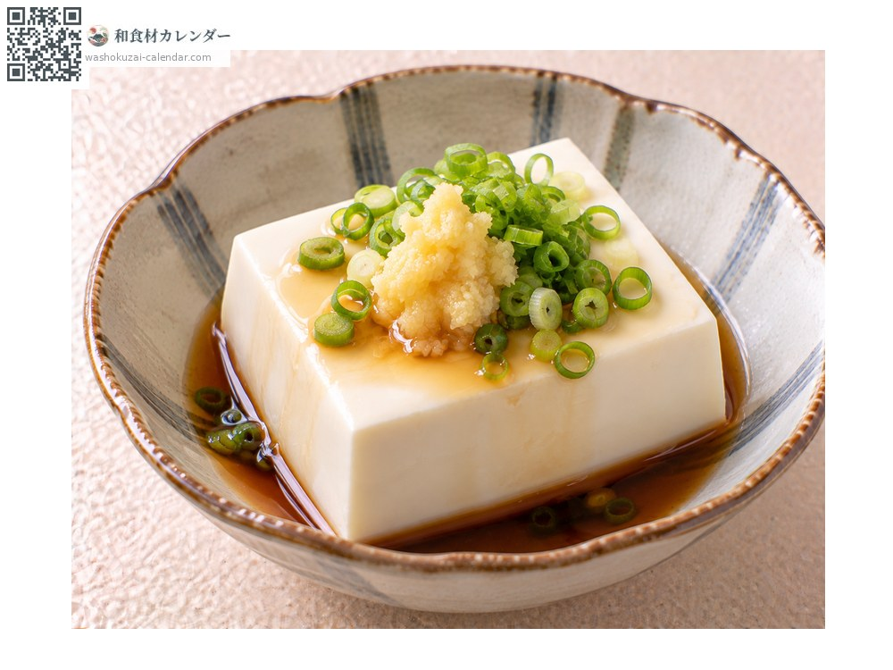
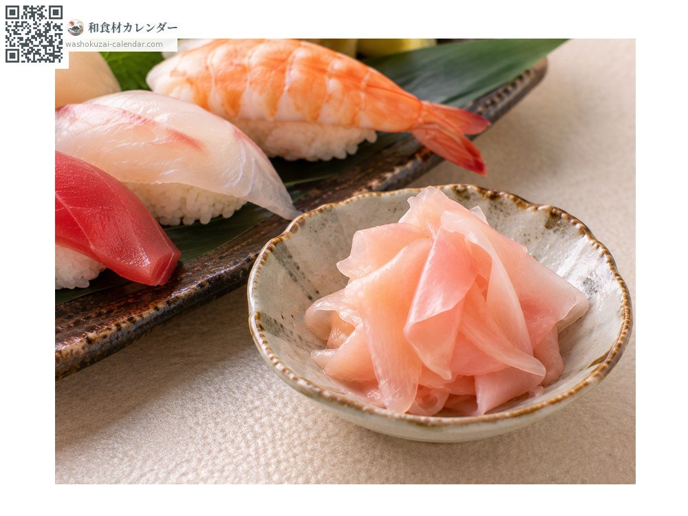
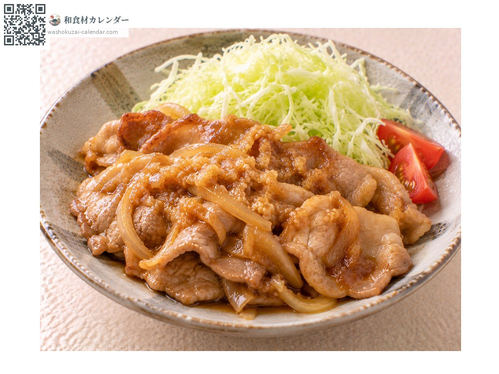
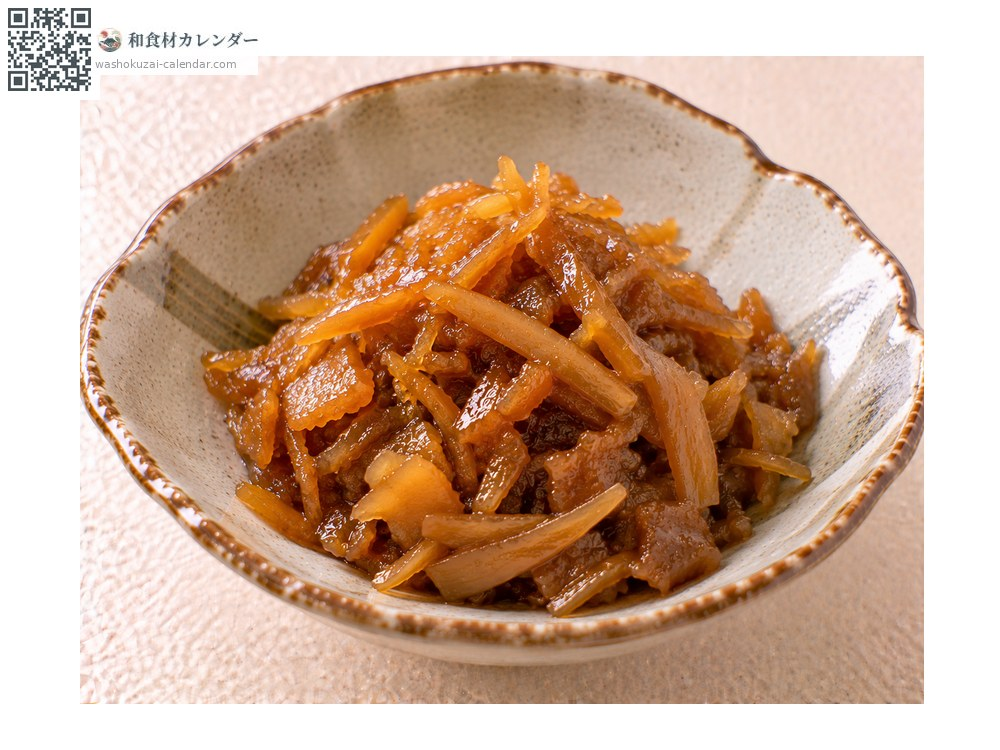

野菜
生姜
しょうが
別名・別表記新生姜、ショウガ、ひねしょうが、shoga、shouga、hineshoga、hineshouga
旬は7月・8月・9月

旬の時期
1月
2月
3月
4月
5月
6月
7月
8月
9月
10月
11月
12月
旬出回り
調理法

薬味
すりおろして冷奴や麺類に。香りが立つ。

甘酢漬け
新生姜を甘酢に漬ける。寿司のガリになる。

生姜焼き
すりおろしてタレに混ぜ、豚肉を焼く。

佃煮
刻んで甘辛く煮る。ご飯の友になる。
選び方
皮に艶があり、ふっくらして硬いもの。新生姜は白く、根元が紅いもの。
保存方法
乾燥と低温に弱い。新聞紙に包み冷暗所へ。新生姜は冷蔵し早めに使う。
主な産地
豆知識
貯蔵した根生姜（ひね生姜）は辛味と香りが強く薬味や加熱料理に向く。夏に出回る新生姜は水分が多く柔らかで辛味が穏やか、甘酢漬けに使われる。葉付きの葉生姜は味噌をつけて生で食べる。高知県が全国生産の過半を占める。